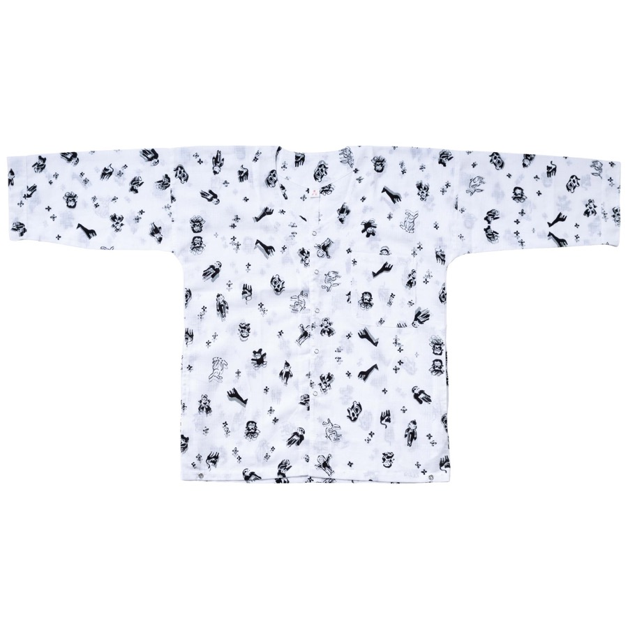
手拭
Tenugui

Order
ブランド、企業、個人のお客様まで。
手拭・浴衣・シャツ・暖簾・テキスタイルなど、
染色から仕立てまでご相談いただけます。
For brands, companies, and individuals.
Tenugui, yukata, shirts, noren, textiles, and more.
We handle everything from dyeing to finishing.

手拭
Tenugui
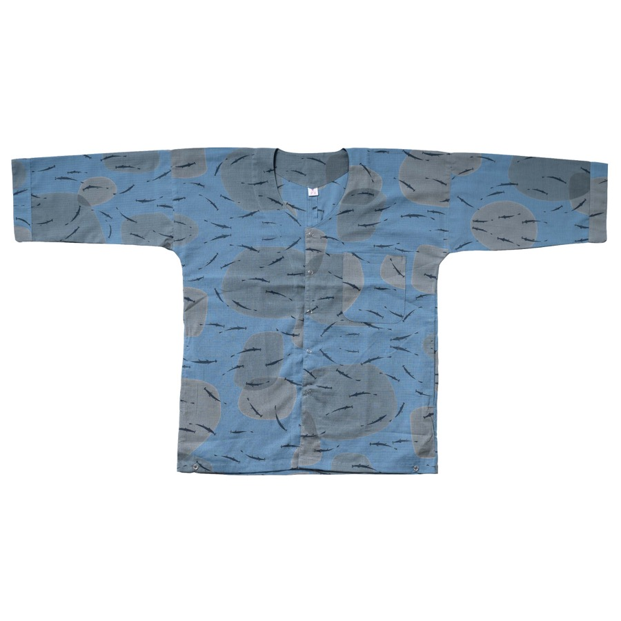
浴衣
Yukata
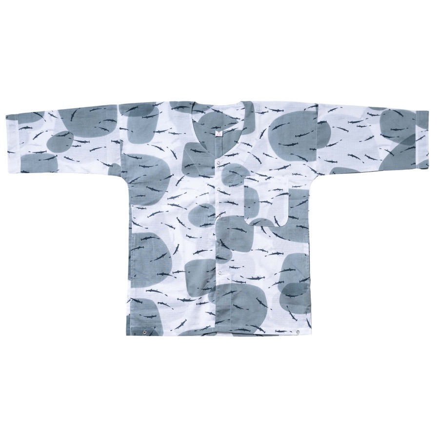
シャツ
Shirt
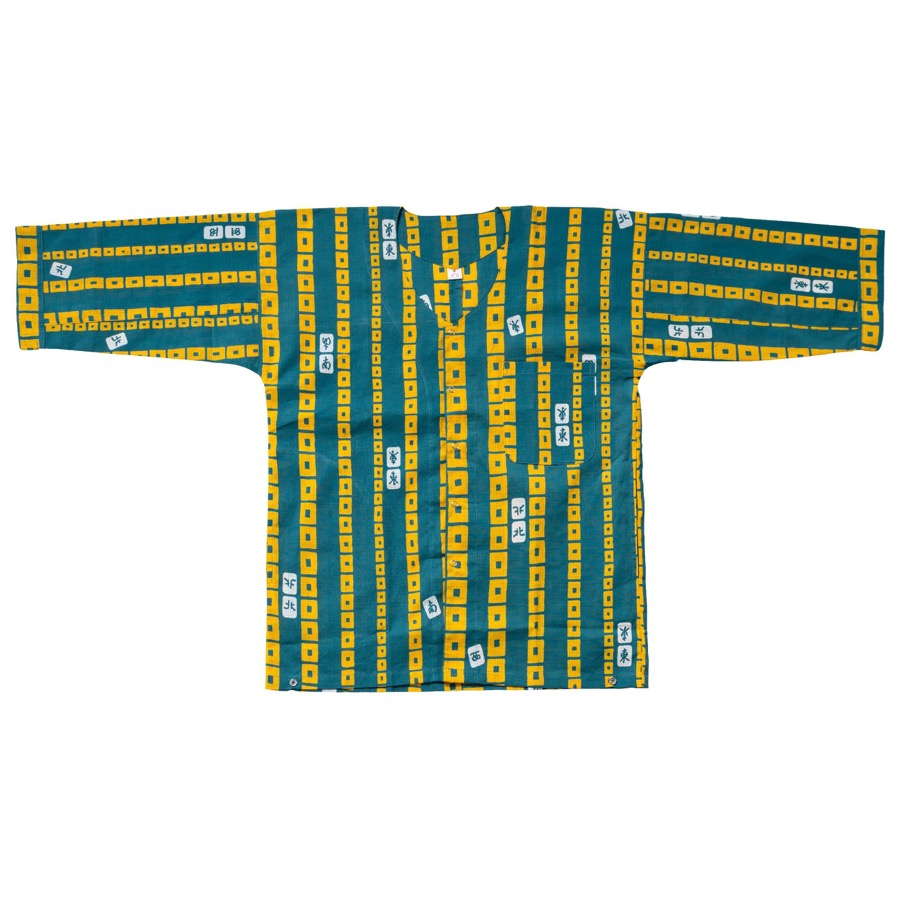
暖簾
Noren
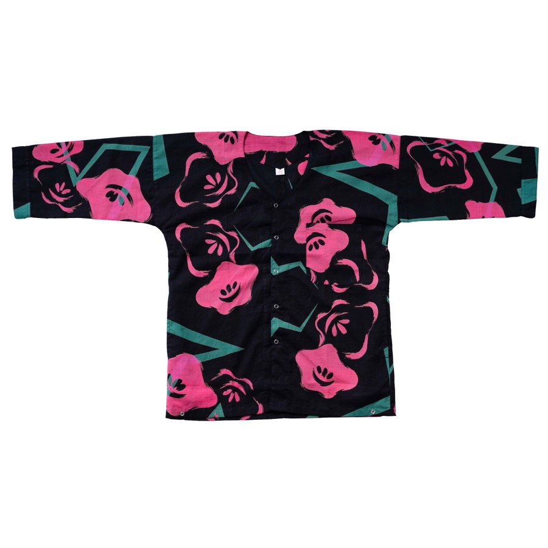
生地
Textile
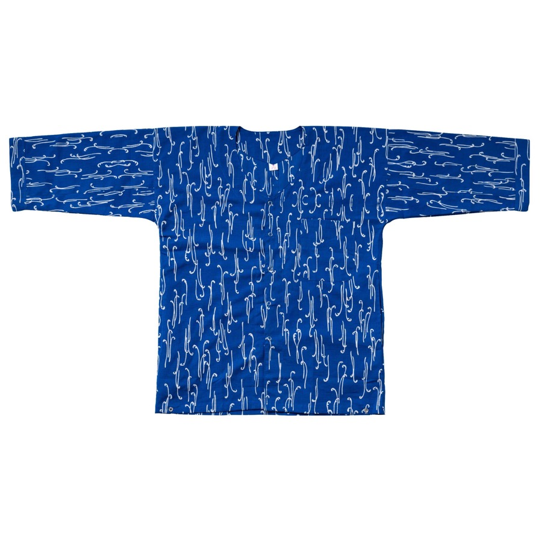
記念品・ノベルティ
Novelty
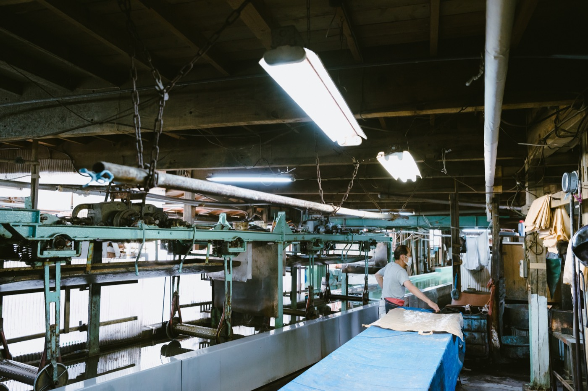
作りたいもの、数量、用途、ご希望納期などをお聞きし、注染製品として実現するための方法をご提案します。
Share your ideas — what you want to make, quantity, intended use, and timeline. We'll suggest the best approach for your chusen project.
知多木綿、特岡、クレア特岡、綿紅梅など、用途や仕上がりに合わせて生地をご提案します。
We suggest fabrics — Chita cotton, Tokuoka, Crea Tokuoka, Momen Koubai — based on the intended use and desired finish.
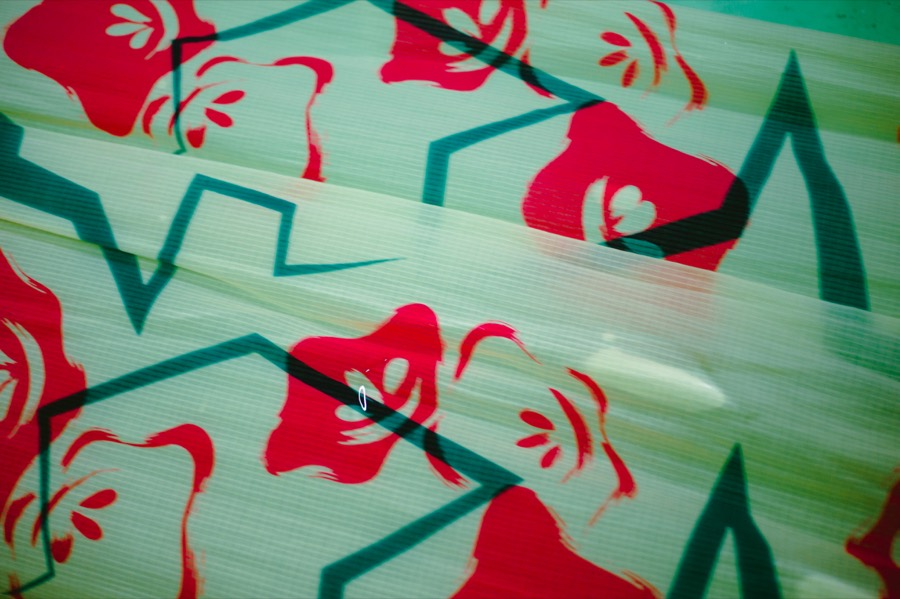
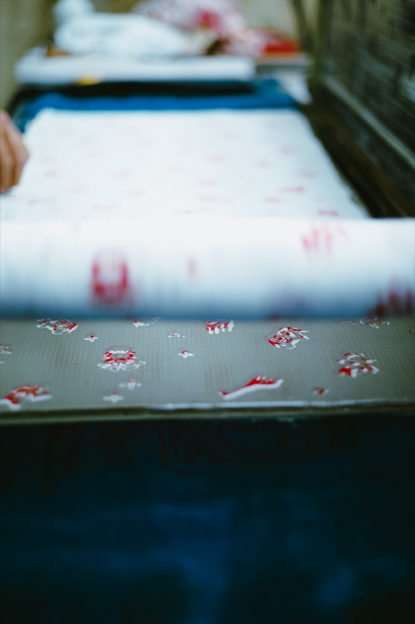
注染は、表裏が同じように染まり、多色を同時に扱える染色技法です。職人の手仕事により、一枚ずつ表情のある染め上がりになります。
Chusen dyes both sides of the fabric simultaneously, allowing multiple colors at once. Each piece carries the unique touch of the craftsperson's hand.
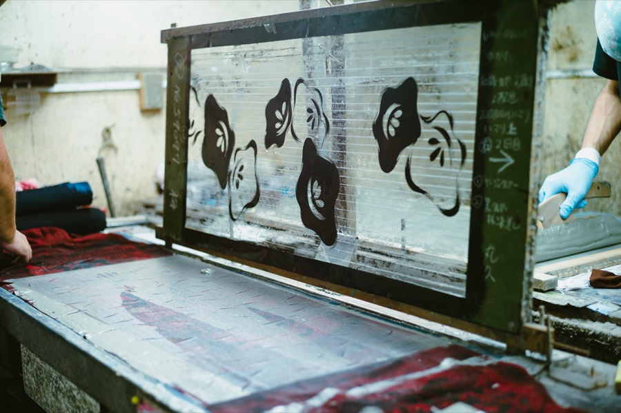
型紙
Stencil
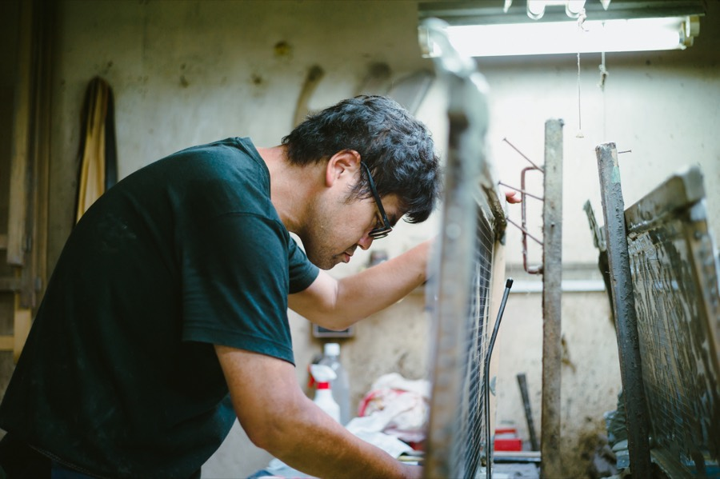
糊置き
Paste
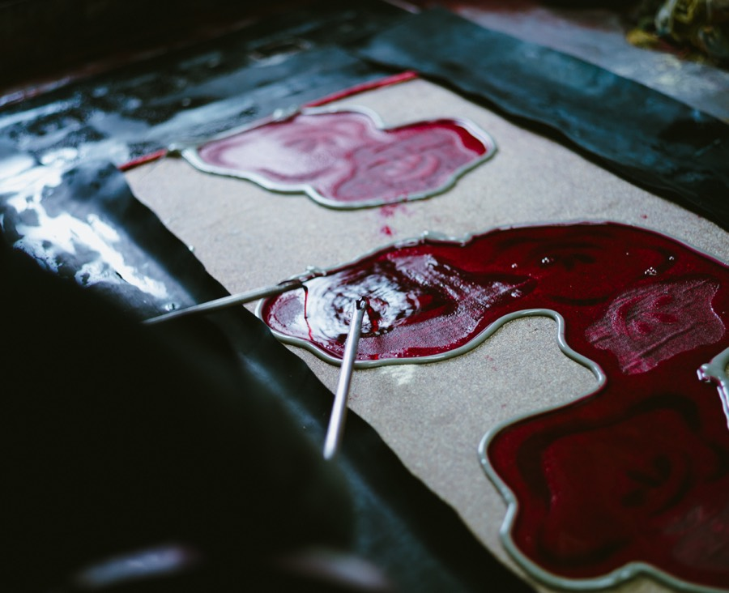
注染
Dyeing
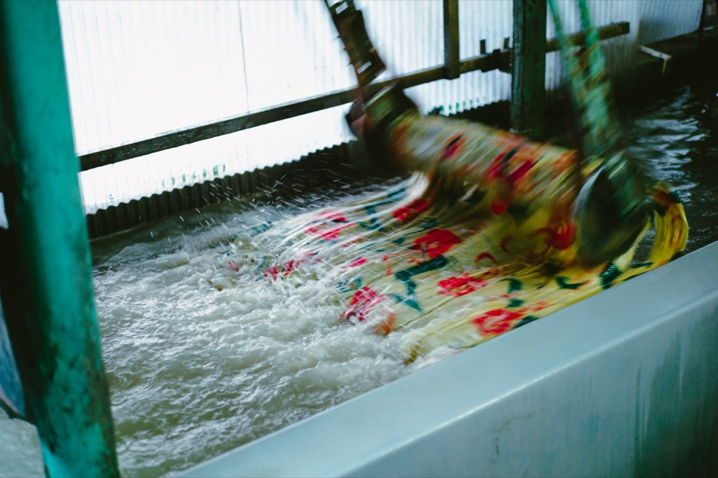
水洗い
Washing
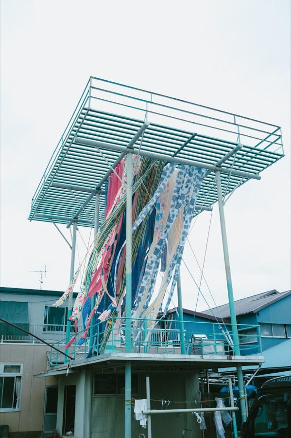
乾燥
Drying
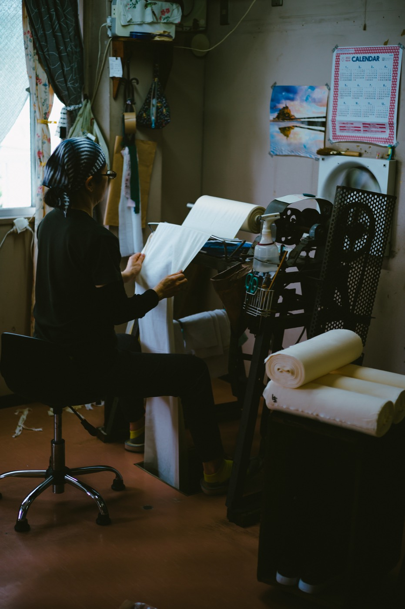
手拭の裁断・包装、浴衣やシャツの縫製、暖簾や袋物の仕立てなど、製品に合わせて仕上げまで対応します。
From cutting and packaging tenugui to sewing yukata and shirts, and tailoring noren and bags — we handle all finishing in-house.
Consultation
ご相談
Initial discussion
Planning
図案・仕様の確認
Pattern, fabric, and spec review
Estimate
お見積
Quotation
Production
染色・仕立て
Dyeing and finishing
Delivery
納品
Shipment
Payment
お支払い
Invoice and payment
数量・仕様・時期により変動します。まずはお気軽にご相談ください。
Lead time and MOQ may vary depending on quantity, specifications, and season.
注染は手仕事のため、以下のような特性があります。ご了承のうえご検討ください。
As a handcraft technique, chusen has the following characteristics. Please keep these in mind.
作りたいものが明確でない段階でも構いません。
用途やイメージから、一緒に形を考えていきます。
You don't need to have everything figured out.
We'll work through the details together.